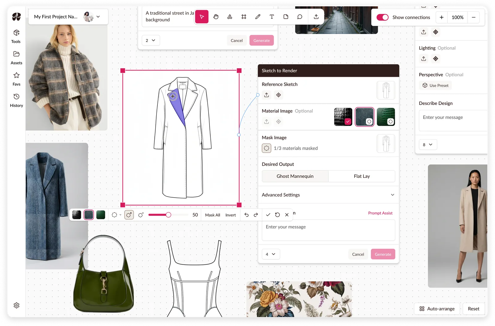
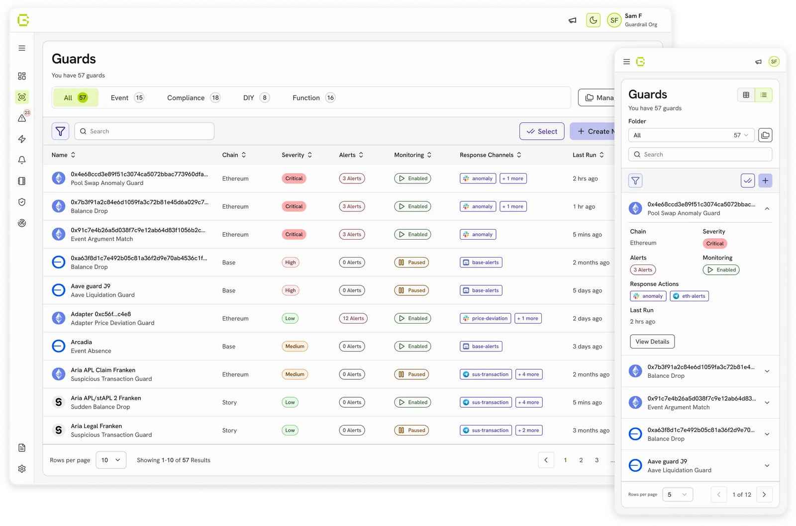
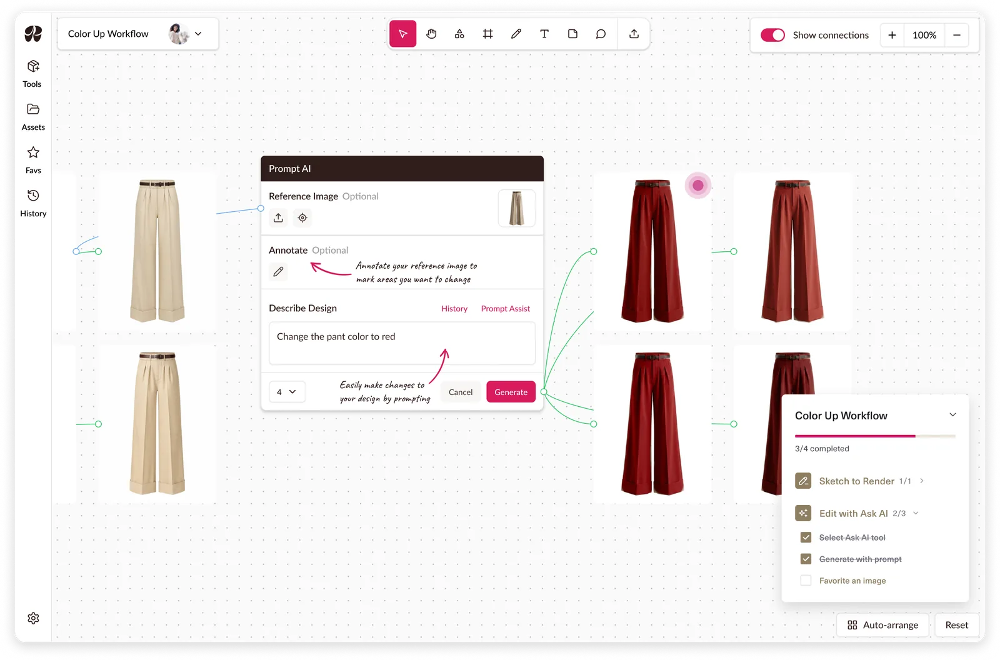

Raspberry AI: Masking on a Canvas
Multi-material masking, a mode leaving the rest of the workspace usable.
Voice-assisted way-finding for the PC Express app and in-store kiosks. Final project for the MDEI program at the University of Waterloo.

Loblaw Digital’s brief for our MDEI final project: how can AI help shoppers find what matters to them beyond static signage? We designed Lola, a voice-assisted guide inside the PC Express app, plus an in-store kiosk for shoppers without it.
With two teammates, we mapped out the flows for Scenario A (sign-up, preferences, lists), then I built the prototype for Scenario B, AI navigation and product discovery, including the app’s voice assistant feature. After our mentor suggested making voice the primary feature, I incorporated it into the prototype for Scenario A. I also researched competitors and ran a usability test each round.
See our full pitch deck here.
Disclaimer: Loblaw Digital and Loblaws brand elements, as well as other company images, were used for academic purposes only

The brief: How might Loblaw Digital create a seamless and engaging way-finding system that empowers customers to efficiently locate and discover products in-store that align with their personal preferences, such as Canadian-made goods or diabetes-friendly options?
Shoppers with specific needs hunt aisle by aisle and often leave without the item they came for: it isn’t where they expected, and staff can’t always help since products move for promotions.
Our market scan, including my audit below, found apps lack real-time aisle-level navigation and most way-finding is costly to maintain.
“Customers often ask me where certain items are, and sometimes they are not in their usual spots because of promos. An app that would tell us where things are, or even if they’re in stock would be super useful”
“Not in a grocery store but choosing an item in the app/ in-store screen and it telling me where I can find the item exactly on the floor of the store made my shopping experience x10 better.”
Instacart Smart Shop

Dietary preferences shape search and recommendations; tagging is automated.
Image: Instacart
ALDIgo

Checkout-free, run by cameras and scanners across the ceiling.
Cust2Mate

An attachable cart panel with sensors, a scale and a store map.
Image: Cust2Mate
My decision, made after test round one.


Before: the mic icon blended into the UI and users weren’t sure it was the AI assistant. Five of six round-one testers missed it or found it unclear.
After: an ‘L’ for Lola with an audio mark, in colors chosen to stand out and give Lola an identity. It also had to work as a floating button, since mentors pushed voice AI as the solution.
The cost: an off-brand mark. One round-two tester said its color didn’t match the brand, and another expected an assistant-like face, which we left out so no one would mistake Lola for a real person.

My decision, made after test round two.

Before: only subtle tooltips pointed to Lola, with no context on what it is. In round two, testers still asked what it was, and one questioned whether people would want AI reading their data.
After: an onboarding intro to Lola that gives initial guidance and clarifies its role, followed by a permission request before any data is accessed.
I chose a full page over a larger tooltip or pop-up because shoppers are already setting up their profile. The cost: an extra onboarding step that could lead to drop-off.

A team decision.

We started with smart glasses, then a clip-on, and landed on the phone shoppers already carry. Glasses raise hygiene concerns, don’t suit prescription wearers, and don’t exist off the shelf. A clip-on duplicated the phone. My competitor research raised concerns for hardware costs: Cust2Mate bolts sensors onto carts, ALDIgo rigs cameras across the ceiling.
With our mentors’ guidance, we settled on Lola in the PC Express app, which shoppers can talk to hands-free, plus a kiosk for those without a smartphone. The cost: hands-free needs earbuds and a smartphone, and the kiosk is a second surface to maintain.


Lola started voice-first, with the chat transcript as an overlay. I changed it to a traditional chat with voice built in, so shoppers can choose chat or voice and see the transcript from the chat.


We replaced the isometric map with a flat one after mentors said isometric maps are typically harder to understand. It also had unnecessary detail that distracted from the pins marking where items were.


The mobile home page is tailored to each shopper’s preferences. The kiosk works with or without logging in and should encourage exploration, so it leads with discounted and trending items.

Mentors asked how we could encourage more app downloads, so I added a pop-up with a QR code after shoppers create their list. It’s large enough to draw attention, but small enough to leave their next actions uncovered.

At the end of the ten days, we delivered a Figma prototype, demo video and 20-minute pitch to the rest of our cohort and our two Loblaw Digital mentors.
A daily stand-up kept us aligned and one FigJam hub held research, flows, test notes and decisions.
KPIs we would measure:
“This is a tool that we need in the store - both for customers and employees.”
Limitations:
Next steps:
Our prototype used preloaded conversations, so testers went through the motions instead of actually chatting with the AI. We could test whether shoppers found and understood Lola, but not whether its answers were useful, and we had no real store data to power a live version. Next time I’d have an AI role play as Lola against a made-up store layout, so shoppers could ask their own questions and we could test the conversation and usefulness, though not its accuracy for a real store.

Multi-material masking, a mode leaving the rest of the workspace usable.

Created a design system used to redesign and build new features on.

A guided tutorial system built around workflows to reduce onboarding calls.